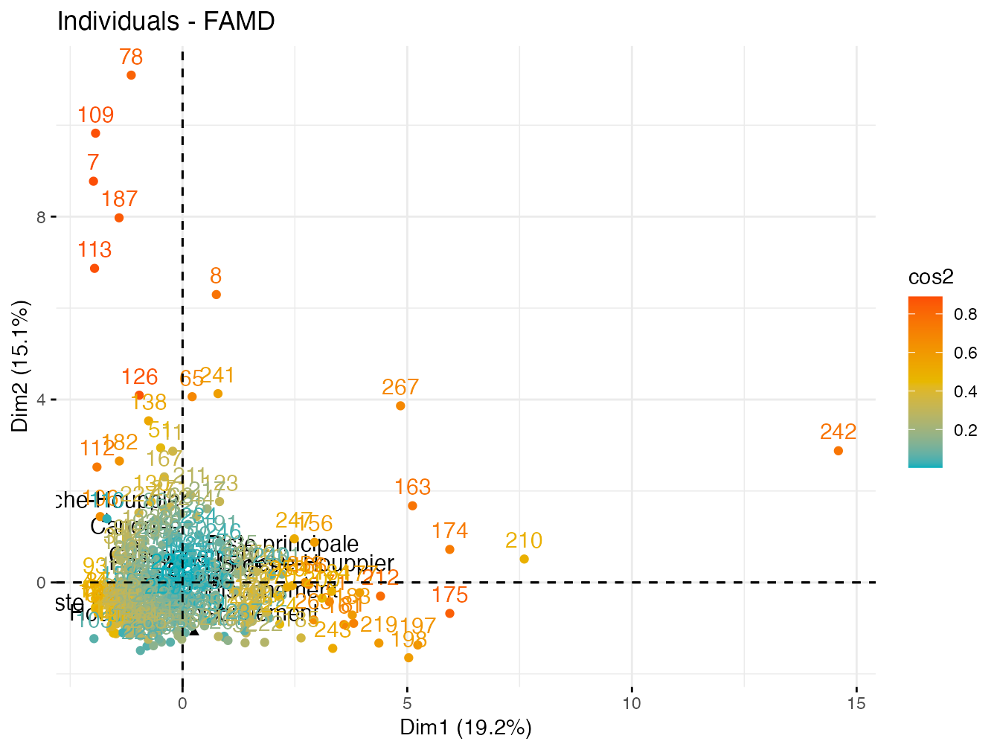

Ce gitbook est librement annotable à l'aide de Hypothes.is. N'hésiter à l'annoter soit en public ou au sein d'un groupe. Pour ajouter vos annotations, sélectionner un zone de texte et cliquer sur le menu pop-up. Pour voir les annotations des autres lecteurs, cliquer dans dans le coin supérieur droit de la page
3 AFDM:Analyse factorielle de données mixtes
3.1 Angélique
load("vault/data/AG_plac.RData")#1er jeu de donnees
AG_plac_AFDM <- AG_plac %>%
dplyr::select(Foret, Type.placette, diversite, n_AG, n_inf_130,
n_sup_130, hauteur_moy, hauteur_min, hauteur_max, sumhauteur) %>%
filter(!is.na(hauteur_min), !is.na(hauteur_moy), !is.na(hauteur_max),
!is.na(sumhauteur), !is.na(Type.placette))
# dplyr::select(Foret,n:n_inf_130,n_sup_130,diversite:n_VIO)
sum(is.na(AG_plac_AFDM))## [1] 0# dplyr::select(2:10,16:22,26,27,31,34,37,40,41,44,45,48,49,51,52,56,57,60,61)
res.famd <- FAMD(AG_plac_AFDM, graph = FALSE)eig.val <- res.famd$eig
barplot(eig.val[, 2], names.arg = 1:nrow(eig.val), main = "Variances Explained by Dimensions (%)",
xlab = "Principal Dimensions", ylab = "Percentage of variances",
col = "steelblue")
# Add connected line segments to the plot
lines(x = 1:nrow(eig.val), eig.val[, 2], type = "b", pch = 19,
col = "red")
eig.val## eigenvalue percentage of variance
## comp 1 3.447962 19.155346
## comp 2 2.726477 15.147094
## comp 3 1.341535 7.452973
## comp 4 1.137082 6.317122
## comp 5 1.059898 5.888321
## cumulative percentage of variance
## comp 1 19.15535
## comp 2 34.30244
## comp 3 41.75541
## comp 4 48.07254
## comp 5 53.96086## Variables qualitatives et quantitatives
var <- get_famd_var(res.famd)
var## FAMD results for variables
## ===================================================
## Name Description
## 1 "$coord" "Coordinates"
## 2 "$cos2" "Cos2, quality of representation"
## 3 "$contrib" "Contributions"# Coordonnées des variables
head(var$coord)## Dim.1 Dim.2 Dim.3
## diversite 0.012502394 0.02326411 0.6144465953
## n_AG 0.883183496 0.01428793 0.0128702310
## n_inf_130 0.669765802 0.05513751 0.0276744314
## n_sup_130 0.606776052 0.06560694 0.0080207337
## hauteur_moy 0.006545122 0.93612413 0.0017853949
## hauteur_min 0.029977698 0.70119872 0.0003599731
## Dim.4 Dim.5
## diversite 0.0009997302 0.01582323
## n_AG 0.0068694483 0.01797176
## n_inf_130 0.0066654732 0.06706463
## n_sup_130 0.0018470475 0.07582262
## hauteur_moy 0.0008132428 0.01627364
## hauteur_min 0.0011504889 0.03742157# Cos2: qualité de représentation
head(var$cos2)## Dim.1 Dim.2 Dim.3
## diversite 1.563098e-04 0.0005412186 3.775446e-01
## n_AG 7.800131e-01 0.0002041450 1.656428e-04
## n_inf_130 4.485862e-01 0.0030401449 7.658742e-04
## n_sup_130 3.681772e-01 0.0043042707 6.433217e-05
## hauteur_moy 4.283862e-05 0.8763283939 3.187635e-06
## hauteur_min 8.986624e-04 0.4916796414 1.295806e-07
## Dim.4 Dim.5
## diversite 9.994604e-07 0.0002503746
## n_AG 4.718932e-05 0.0003229840
## n_inf_130 4.442853e-05 0.0044976644
## n_sup_130 3.411585e-06 0.0057490695
## hauteur_moy 6.613638e-07 0.0002648315
## hauteur_min 1.323625e-06 0.0014003742# Contributions aux dimensions
head(var$contrib)## Dim.1 Dim.2 Dim.3 Dim.4
## diversite 0.3626024 0.8532662 45.80174988 0.08792067
## n_AG 25.6146512 0.5240437 0.95936588 0.60412953
## n_inf_130 19.4249750 2.0222987 2.06289268 0.58619106
## n_sup_130 17.5981061 2.4062899 0.59787725 0.16243749
## hauteur_moy 0.1898258 34.3345694 0.13308595 0.07152015
## hauteur_min 0.8694323 25.7181235 0.02683292 0.10117906
## Dim.5
## diversite 1.492901
## n_AG 1.695612
## n_inf_130 6.327462
## n_sup_130 7.153767
## hauteur_moy 1.535397
## hauteur_min 3.530677# Graphique des variables
fviz_famd_var(res.famd, repel = TRUE)fviz_famd_var(res.famd, repel = TRUE)# Contribution à la première dimension
fviz_contrib(res.famd, "var", axes = 1)# Contribution à la deuxième dimension
fviz_contrib(res.famd, "var", axes = 2)# Contribution à la 3e dimension
fviz_contrib(res.famd, "var", axes = 3)3.2 Variables quantitatives
quanti.var <- get_famd_var(res.famd, "quanti.var")
quanti.var## FAMD results for quantitative variables
## ===================================================
## Name Description
## 1 "$coord" "Coordinates"
## 2 "$cos2" "Cos2, quality of representation"
## 3 "$contrib" "Contributions"fviz_famd_var(res.famd, "quanti.var", col.var = "black") # on ne peut pas utiliser repel=TRUE car trop de variables
# fviz_famd_var(res.famd, 'quanti.var', repel =
# TRUE,col.var = 'black')
# couleur selon importance de la contribution aux axes
fviz_famd_var(res.famd, "quanti.var", col.var = "contrib", gradient.cols = c("#00AFBB",
"#E7B800", "#FC4E07"))
# Couleur par valeurs cos2: qualité sur le plan des
# facteurs
fviz_famd_var(res.famd, "quanti.var", col.var = "cos2", gradient.cols = c("#00AFBB",
"#E7B800", "#FC4E07"))fviz_famd_var(res.famd, "quanti.var", col.var = "cos2", gradient.cols = c("#00AFBB",
"#E7B800", "#FC4E07"), axes = c(1, 3))
# Cos2 total des variables sur Dim.1 et Dim.2
fviz_cos2(res.famd, choice = "var", axes = 1:2)
# Cos2 total des variables sur Dim.1 et Dim.3
fviz_cos2(res.famd, choice = "var", axes = 1:3)
3.3 Variables qualitatives
quali.var <- get_famd_var(res.famd, "quali.var")
quali.var## FAMD results for qualitative variable categories
## ===================================================
## Name Description
## 1 "$coord" "Coordinates"
## 2 "$cos2" "Cos2, quality of representation"
## 3 "$contrib" "Contributions"fviz_famd_var(res.famd, "quali.var", col.var = "cos2", gradient.cols = c("#00AFBB",
"#E7B800", "#FC4E07"))
fviz_famd_var(res.famd, "quali.var", col.var = "cos2", gradient.cols = c("#00AFBB",
"#E7B800", "#FC4E07"), axes = c(1, 3))3.4 Individus
ind <- get_famd_ind(res.famd)
ind## FAMD results for individuals
## ===================================================
## Name Description
## 1 "$coord" "Coordinates"
## 2 "$cos2" "Cos2, quality of representation"
## 3 "$contrib" "Contributions"#couleur par contribution aux axes
fviz_famd_ind(res.famd, col.ind = "contrib",
gradient.cols = c("#00AFBB", "#E7B800", "#FC4E07"))
#couleur par qualité de representation
fviz_famd_ind(res.famd, col.ind = "cos2",
gradient.cols = c("#00AFBB", "#E7B800", "#FC4E07"))
#couleur par traitement
fviz_mfa_ind(res.famd,
habillage = "Foret", # color by groups
palette = c("#00AFBB", "#E7B800", "#FC4E07"),
addEllipses = TRUE, ellipse.type = "confidence",
repel = TRUE # Avoid text overlapping
) fviz_ellipses(res.famd, c("Foret"))
# n'affiche pas le num des individus
fviz_ellipses(res.famd, 1:2, geom = "point")
# individu extreme